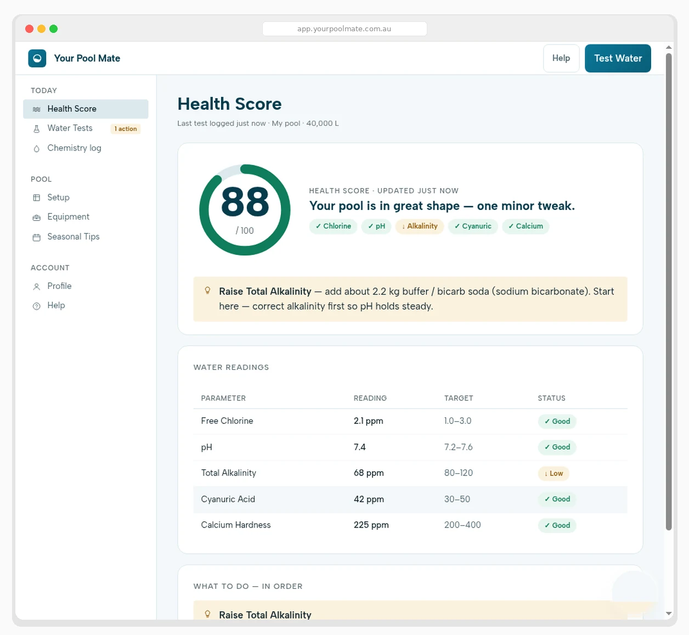

A live Health Score for your water. Chemical doses calculated to the gram. A complete record of every test — so you always know what's going on and what to do next.
Most pool problems don't appear overnight. They build up slowly when small imbalances go unnoticed. Your Pool Mate gives you the same visibility a pool technician uses — presented simply, so you can act confidently without needing a chemistry background.

The average Australian pool owner spends between $800 and $1,200 a year on pool chemicals. Most of that money goes on corrective treatments — fixing problems that could have been caught early with a bit of consistent monitoring.
It's not that pool chemistry is complicated. It's that most people have never been shown how to read the numbers properly, or what to do when they're out of range.
Your pool's overall condition, expressed as a single number from 0 to 100. Green means everything is in order. Yellow means one or two things need attention soon. Red means act now. It takes into account your chlorine level, pH, total alkalinity, stabiliser, and other relevant parameters — so you can see at a glance whether your pool is safe to swim in, before the grandkids arrive or before a party.
Photograph your pool shop printout or test strip and the numbers populate automatically — chlorine, pH, alkalinity, stabiliser, calcium hardness and more. No manual entry, no typos.
Not "add some chlorine." Exactly how many grams of which product, calculated for your pool volume, your current readings, your sanitisation type, and your target levels — with a plain-English explanation of why.
Every reading logged, every chemical addition recorded. Over time you'll start to recognise patterns — how your pool behaves after rain, after heavy use, across seasons — and catch problems before they're visible.
Australian pool and equipment warranties expect documented water chemistry. Every test you log is timestamped and exportable — the paper trail builds itself, automatically.
A Progressive Web App — open in any browser, add to your home screen in one tap. iPhone, Android, desktop. Always the latest version, no updates to manage.
Enter your pool volume, sanitisation type (chlorine, salt, mineral) and any equipment. Two minutes, done once.
Type in your readings, or photograph your test strip or pool shop printout — our OCR fills everything in automatically. If you haven't had a test done recently, most local pool shops will test your water for free. Bring the printout back and scan it straight in.
📸 Photo scanning saves ~3 minutes per testInstant analysis. If anything needs attention, you'll see exactly what to add, how much, and why — in plain English.
Log what you added, tick it off, and let Your Pool Mate track whether it worked. Over time, your pool becomes predictable.
Green pool water is almost always caused by algae growth. Algae takes hold when free chlorine drops below 1.0 ppm — the point at which it can no longer keep the water sanitised. This typically happens when chlorine depletes faster than expected due to high UV exposure, heavy pool use, warm water temperatures, or low stabiliser (cyanuric acid) levels that let chlorine break down rapidly in sunlight.
The fix involves shocking the pool with a high dose of chlorine, brushing the walls and floor to dislodge algae, and running the filter continuously until the water clears. A green pool event typically costs $300–$500 in chemicals and takes 5–7 days to fully clear.
A pool is safe for children to swim in when free chlorine is between 1.0 and 3.0 ppm, pH is between 7.2 and 7.6, and the water is visually clear. Chlorine above 5.0 ppm can cause eye and skin irritation; below 1.0 ppm, the water isn't adequately sanitised.
Clear-looking water can still have insufficient chlorine or an unbalanced pH — the only reliable way to know is to test it. Your Pool Mate's Health Score gives you a green, yellow, or red status before anyone gets in.
Free chlorine should sit between 1.0 and 3.0 ppm under normal conditions — toward the upper end during hot weather, heavy use, or after rain. Combined chlorine should stay below 0.2 ppm; above that, the pool needs shocking. Chlorine lasts longer in Australian sun when stabiliser (cyanuric acid) is kept between 30 and 50 ppm.
pH measures how acidic or alkaline the water is, on a scale of 0–14. The correct range for a pool is 7.2–7.6. Low pH causes eye and skin irritation, corrodes equipment, and burns through chlorine fast. High pH makes chlorine far less effective even when it's reading correctly, and causes cloudiness and scale.
Total alkalinity (correct range: 80–120 ppm) is the water's ability to resist pH swings. Too low, and pH becomes unstable — it'll swing with rain, chemicals, or heavy use. Too high, and pH becomes hard to lower, with cloudy water as a side effect. Adjust alkalinity first, then fine-tune pH.
Usually one of three things: high pH reducing chlorine's effectiveness, insufficient filtration, or high combined chlorine (chloramines) signalling the pool needs shocking. Test every parameter, not just chlorine — adding more chlorine to water with a pH of 8.0 won't do much.
At least weekly in summer — twice a week during heavy use, very hot weather, or after rain. Fortnightly is usually enough in cooler months. Regular testing is the single most effective way to cut chemical costs and avoid problems before they start.
After chlorine or pH adjusters, wait at least four hours with the pump running, then re-test. After shocking, wait until free chlorine drops below 5.0 ppm. Algaecide re-entry times vary by product — check the label, usually 15 minutes to 24 hours.
Start with a full 30-day free trial — no card required. When it ends, our first 300 members lock in $79 once, lifetime. Everyone after that continues for $49/year. You choose inside the app when your trial ends — nothing to pay today.